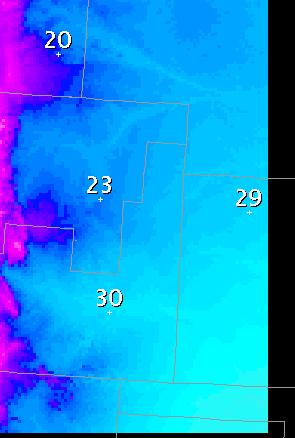

Using the GFE in Show ISC Mode
The GFE is one of two modes: Normal, Show ISC. When the GFE is
toggled
into "Show ISC Mode" using the  button on the toolbar, the data presented in the spatial editor is the
composite grid, rather than the forecast or primary grids. A
composite
grid is made up of the forecast grid over the WFO area, and all of the
surrounding intersite coordination grids received from adjacent WFOs
for
the remainder of the area., if your office type is WFO. For RFCs,
a composite grid is made up of the forecast grid over the RFC area, and
all of the surrounding intersite coordination grids received from
adjacent RFCs for the remainder of the area. Any area that does
not have ISC data or forecast data available will be blank.
button on the toolbar, the data presented in the spatial editor is the
composite grid, rather than the forecast or primary grids. A
composite
grid is made up of the forecast grid over the WFO area, and all of the
surrounding intersite coordination grids received from adjacent WFOs
for
the remainder of the area., if your office type is WFO. For RFCs,
a composite grid is made up of the forecast grid over the RFC area, and
all of the surrounding intersite coordination grids received from
adjacent RFCs for the remainder of the area. Any area that does
not have ISC data or forecast data available will be blank.
When in Show ISC mode, the following behavior is changed from the
default:
- Composite Grid is shown in the spatial editor consisting of the
forecast
data over the combined CWA/marine zones (for wfos) and intersite
coordination data
over the remainder of the grid domain. For RFCs, the forecast
data is the RFCs area of responsibility.
- Editing changes made to the Forecast grid may not be visible, if
those
changes are made to the Forecast grid outside of the CWA/marine zones
(for WFOs) and RFC area of responsibility (for RFCs)
(since
the intersite coordination data will be shown instead).
- Blank areas indicate no data has been received.
- The Pencil tool will pick up the data from either the forecast
data or
the intersite coordination data depending upon the location of the
start
drag operation.
- The Move/Copy tool will move/copy the composite grid and place it
into
the forecast grid. The region copied/moved will be clipped to
those
valid data points before the operation begins. The valid points
are
defined as your forecast grid and the valid intersite coordination data.
- The Smooth tool will smooth between the ISC and the Fcst segments
of the composite grid.
- The Color Bar Fit To Data operations will use the composite grid
for its calculations.
- The Sample Tool and sample points will show the data value, the
site identifier,
the last update time, and whether or not the data came from an
Official/Published
database for the ISC portions of the grid. The site
identifier,
update time, and official db symbol may be turned off through the GFE
Maps->Sample
menu. Markers (similar to samples except there are no data values
displayed) may be placed at appropriate locations to indicate the site
identifier, update time, and official db symbol. These can be
controlled
through the GFE Maps->Markers menu.
The following items in the GFE are not affected by the toggling of
"Show
ISC Mode":
- The temporal editor samples and edit operations always apply to
the
Forecast
data, and does not use the ISC portions of the grid.
- Queries apply to the Forecast data, and do not use the ISC
portions of
the grid unless explicitly specified in the query.
- Most smart tools apply to the Forecast data, and do not use the
ISC
portions
of the grid in their calculations unless explicitly specified in the
tool
to use the ISC data set.
- The Contour Tool applies only to the Forecast data grid and does
not
use
the ISC portions of the grid.
The ISC Markers that are present are based on whether ISC data is
displayed from WFOs or RFCs. Each office type has its own set of
ISC markers.
Example of how GFE appearance changes when placed into ISC mode
Normal Display Mode
ISC Display Mode
Samples in Normal Mode compared to ISC Mode

In the normal mode, sample points are displayed. In ISC mode,
for those data points that are really ISC data points, the site
identifier
(optional), the update time (optional), and the official/published
database
symbol (optional) are also presented. The information shown with
a sample is controlled through the Show
... on Data Samples options.
If the ISC data represents data from the official database, then a
"P"
symbol will be appended to the sample string. If the ISC data
represents
data from any other database, e.g., Fcst database, then no symbol will
be appended. The purpose of the "P" symbol is to indicate that is
the official released forecast from that site.
There are two types of samples -- one with data values shown, and
the
other without data values shown. Normal samples, a.k.a. sample
sets,
always have data values shown. Markers are similar to samples,
except
that data values are not shown. Markers are persistent, i.e.,
clearing
sample points will not clear marker points. Loading of sample
sets
does not affect the set of markers placed on the screen. Markers
may be added or removed through the Sample Tool MB3 popup menu. The
information
shown with a marker is controlled through the Show
... on Marker options.